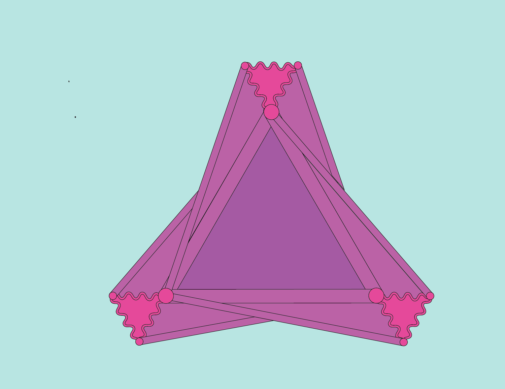
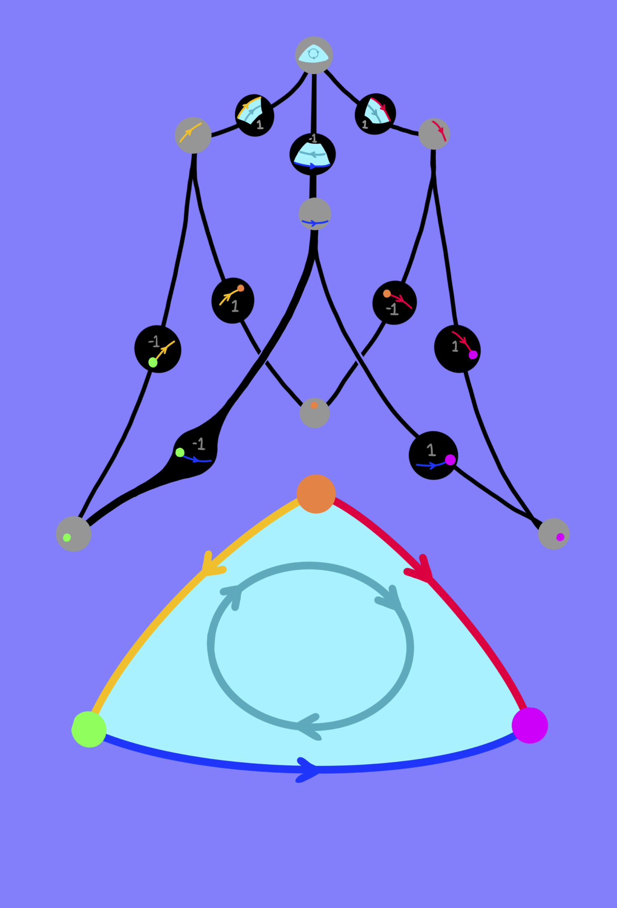

I also enjoy making art.
Above is a relic from a period in my life when I loved all things simplicial, even it’s more degenerate facets.

A standard representation of chains on the 2 simplex, for those who prefer to think of sequences of linear maps in terms of feedforward networks. The fundamental technique of algebraic topology consists of encoding geometry in terms of linear maps.
